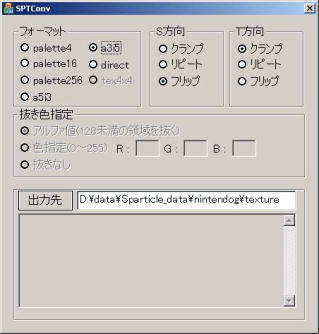
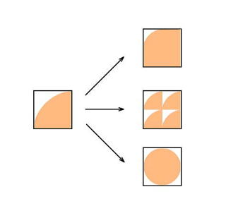

| １ | SPTConv.exeをダブルクリックし、SPTConvを起動します。 | |
| ２ | テクスチャファイルの色数に合わせて、変換するフォーマットを選びます。 | |
| ３ | Ｓ方向の、クランプ、リピート、フリップを選択します。 | |
| クランプ | テクスチャはそのまま表示されます。 | |
| リピート | Ｓ方向にテクスチャをリピートします。 | |
| フリップ | Ｓ方向にテクスチャをフリップします。（いわゆるミラーです） | |
| 4 | 同じようにＴ方向の、クランプ、リピート、フリップを選択します。 | |
| ５ | tga形式で保存したファイルを、ドラッグ＆ドロップでSPTConv.exeの出力先の下の枠内に移動します。 | |
| ※複数のファイルを同時に変換することができます。 | ||
| ６ | 出力先で指定したフォルダに、ＳＰＴファイルが出力されます。 | |
テクスチャフォーマットとフォーマット変換方法
SPTConv.exe使用方法
|  |
|  |
| 何もしない |
| ＳＴリピート |
| ＳＴフリップ |
| ＳＴリピート |
| テクスチャの繰り返し方 |
| リピートやフリップをした場合、パーティクルツールの「描画効果」の「テクスチャ」のそれぞれの方向のリピート回数を２回に設定する必要があります。 |